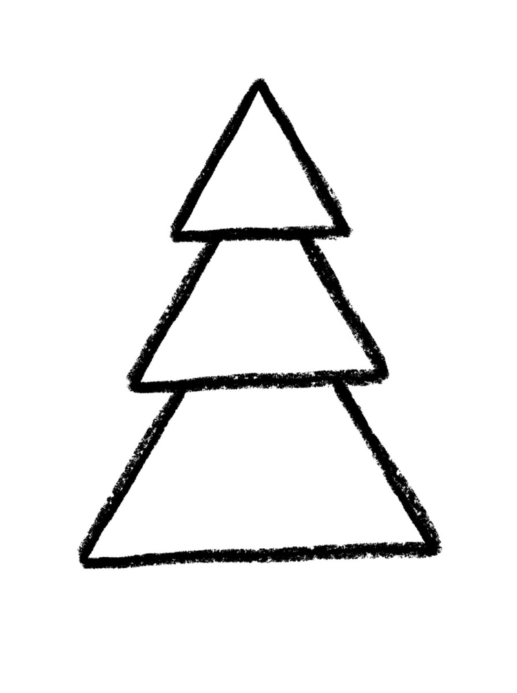
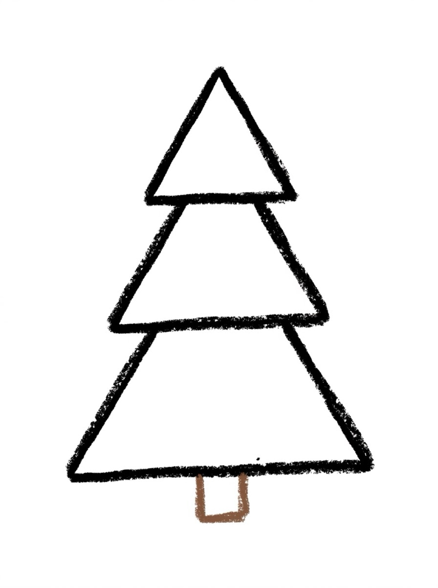
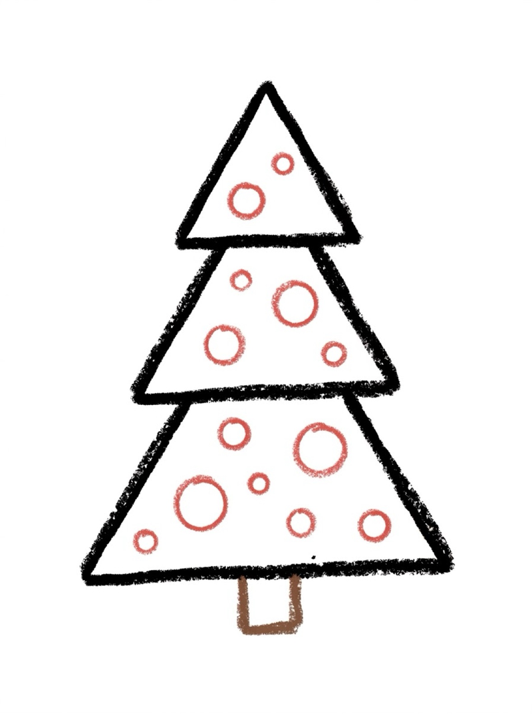
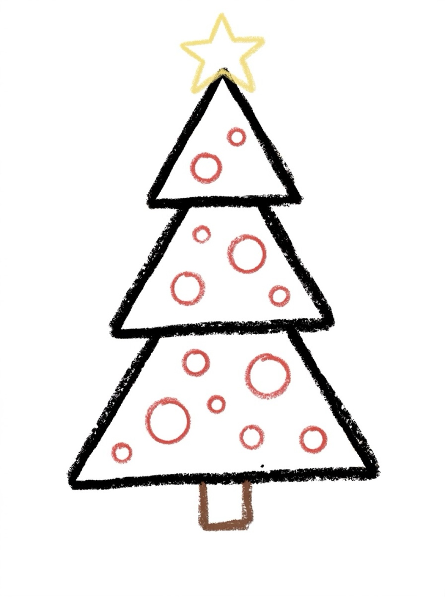
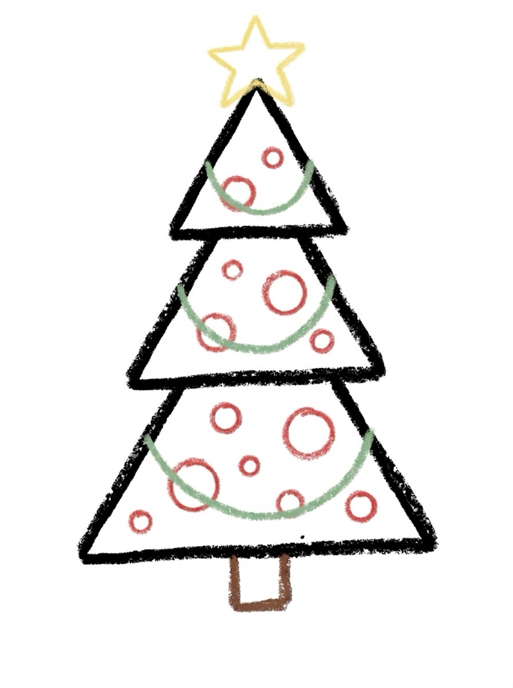
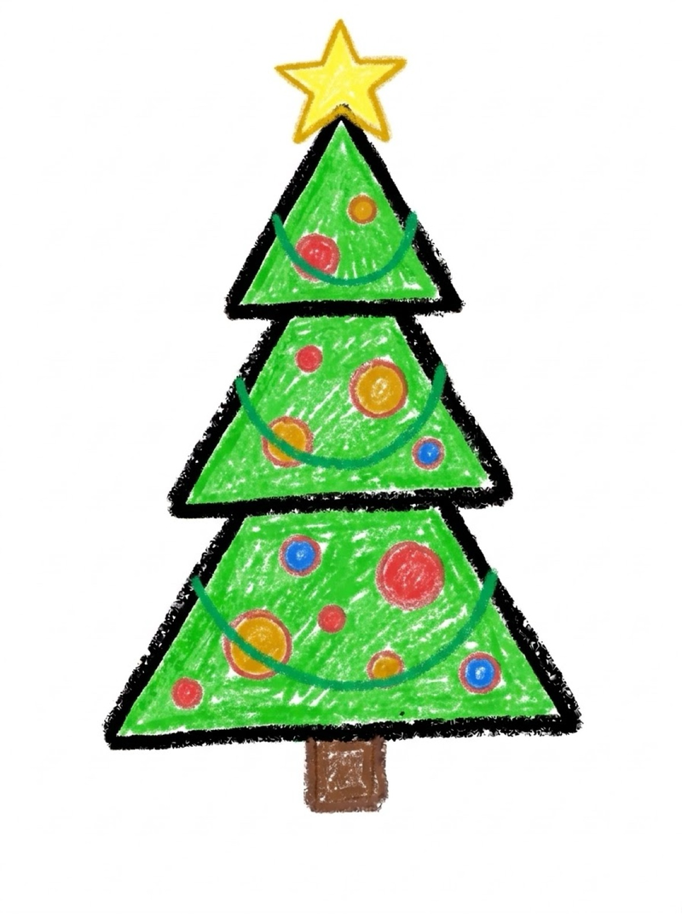

Christmas Tree Drawing for Kids How to Draw a Christmas Tree in 6 Easy Steps
Quick Answer
This free step-by-step tutorial shows kids how to draw a christmas tree in six easy steps: stacked triangle tiers, a sturdy trunk, round ornaments, a star topper, and a swirly garland. Download the printable PDF, grab crayons, and follow along together. Made for ages 3 and up — no signup needed, just print and draw.
At a Glance
- Subject: How to draw a christmas tree
- Ages: 3+
- Steps: 6 steps
- Time: ~15 min
- Difficulty: Easy
- Supplies: Paper, crayons
Nothing says December like a Christmas tree — and this one is built from three simple triangles. Kids love the decorating steps because every tree comes out different. It's the rare tutorial where 'more' is always better: more ornaments, more colors, more sparkle.
✏️ How to Draw a Christmas Tree: Step by Step
One step per box — draw each new part in a different color so kids can see exactly what changed.
Step 1: The Tree Tiers

Draw three stacked triangles, biggest at the bottom and smallest at the top. They overlap a little, like a pine tree's layers.
Step 2: The Trunk

Add a short rectangle under the bottom triangle for the trunk. Every tree needs something to stand on.
Step 3: The Ornaments

Draw circles all over the tree for ornaments — big ones, small ones, as many as you like. Keep them inside the tree's outline.
Step 4: The Star

Draw a star on the very top of the tree. Five points — it doesn't have to be perfect to shine.
Step 5: The Garland

Draw a wavy garland swag across each triangle tier — three gentle swags, one per level. Keep the dips shallow, like garland resting on the branches.
Step 6: Color It In

Color your tree! Green with red and gold ornaments is classic, but a pink or blue tree is extra fun.
📊 Christmas Tree Drawing by Age
Every age can join in — just adjust the job.
| Age | What they can do | Tip |
|---|---|---|
| 3–4 | Trace the triangles and ornaments on the printable | Draw the star for them — five points are tricky |
| 4–5 | Follow all 6 steps with a little help | Count the ornaments together as they draw them |
| 6+ | Draw solo and add their own details | Challenge: draw presents under the tree |
🖨️ Download Your Free Christmas Tree Drawing Printable
The printable lays out all 6 steps one per box, big enough for little hands — kids draw right alongside each step.
⬇️ Open Free Printable 🖨️ Print🎁 Free printable for ages 3+
🎄 Decorate-Your-Own Challenge
Draw the plain tree (just steps 1 and 2), then let your kid decorate it however they want — no rules. More ornaments? Candy canes instead? An angel instead of a star? Open-ended decorating builds decision-making and creativity, and every tree comes out different.
What You'll Need to Draw a Christmas Tree
Grab crayons or markers — this one uses all the festive colors. Green for the tree, brown for the trunk, plus red, gold, blue, and silver for ornaments. A yellow or gold crayon for the star is a must. Standard printer paper works fine.
What They're Learning
This Christmas tree tutorial practices triangles in three sizes — stacking them biggest-to-smallest teaches size ordering and spatial planning. Drawing ornaments inside the tree's outline (not floating outside) builds boundary awareness and hand control. The wavy garland line is great curved-line practice for little hands.
Make It Yours
Once the basic tree is done, try these twists: draw presents stacked underneath, add a string of lights (tiny circles along the garland), or make a snowy tree with white crayon snow on the branches. Kids can also draw a whole forest of trees in different sizes — a whole Christmas tree farm on one page.
🛒 Our Favorite Drawing Supplies
These are the supplies we reach for in our own home — washable (because kids), quality paper, and enough colors to avoid fights.
As an Amazon Associate, MomYouNeedThis earns from qualifying purchases — at no extra cost to you.
💡 Christmas Tree Drawing Tips for Parents
The garland is the step kids love most — three swags, one on each tier, with shallow dips. If the garland sags too much it looks droopy, so show them a gentle curve, not a deep U. Let your child pick the ornament colors at the end: red, gold, blue, whatever they want. A tree with all-purple ornaments is still a Christmas tree, and it's theirs.
Two things that help with every christmas tree drawing attempt: let them pick the colors (a blue christmas tree is still a christmas tree), and don't fix their drawing. If they ask for help, draw on a separate piece of paper, not on theirs. Kids who feel ownership of their drawing come back for the next one; kids who feel corrected stop trying. The goal is a christmas tree they're proud of, not a perfect one.
🎄 How to Draw a Christmas Tree
Learning how to draw a christmas tree is a holiday rite of passage. The trick is three stacked triangles, widest at the bottom, with a small trunk and a star on top. Once kids learn how to draw a christmas tree with that triangle trick, they can draw one in under a minute.
When you practice how to draw a christmas tree, the decorations are the fun part: garland swags across each tier, round ornaments, and a star or angel on top. For a cute tree, add a tiny smiling face among the ornaments. Let kids choose their own ornament colors — no two trees should look alike.
Follow the tutorial on this page: triangles, trunk, garland, ornaments, star. That is how to draw a christmas tree — and it makes a wonderful holiday card.
See free Christmas tree printable for more.
❓ Christmas Tree Drawing FAQs
What is the easiest way for a kid to draw a christmas tree?
Stack three triangles from biggest to smallest, then add a rectangle trunk. Decorate with circle ornaments, a star on top, and a wavy garland line. Triangles and circles do all the work.
What age can kids start learning to draw a christmas tree?
Most kids can follow the stacked-triangle method around age 3 with a grown-up helping, and draw one on their own by ages 4 to 5. Younger children can trace the triangles on the printable.
What supplies do we need to draw a christmas tree?
Just paper and crayons or markers. The free printable PDF lays out all six steps one per box so kids can draw right alongside each step. Festive colors make the best trees.
Is the christmas tree drawing printable really free?
Yes — every printable on MomYouNeedThis is 100% free to download and print. No signup, no payment, just tap the download button.
How do I print the christmas tree drawing tutorial?
Open the PDF and print at 100% scale (not 'fit to page') so the drawing boxes stay big enough for little hands. The printable is designed to stay large — never shrunk to force a fit.
How do you make an easy cute christmas tree drawing?
An easy cute christmas tree drawing uses three stacked triangles, a star on top, dots for ornaments, and a tiny smiling face. This easy cute christmas tree drawing method takes six steps and works for kids as young as three.
What is the easiest way for how to draw a christmas tree?
Stack three triangles widest at the bottom, add a trunk and a star, then decorate with garland and ornaments. That is how to draw a christmas tree in a few steps.
📚 Keep Exploring
- ✏️ All Drawing Tutorials 76 free step-by-step drawing tutorials for kids.
- 🐾 Animal Coloring Free printable animal coloring pages for little learners.
- ✏️ Drawing Practice Free printable drawing pre-writing worksheet for toddlers.